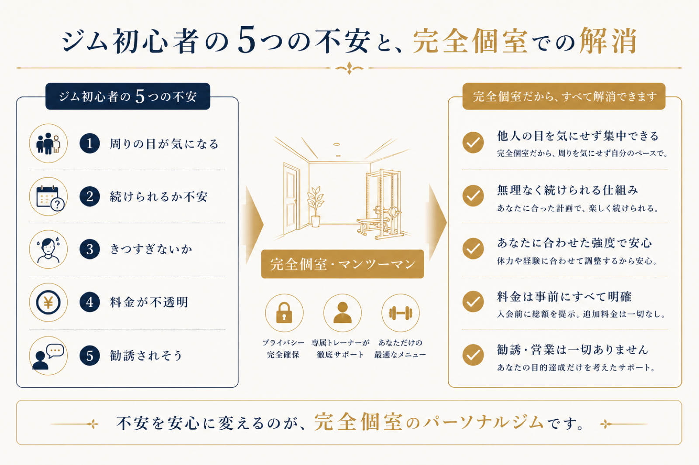

ジムに通ってみたいけれど、初めてだと思うと足がすくむ——「周りの人に見られたら恥ずかしい」「一人で行って大丈夫かな」「きつくて続かないかも」。ジムが初めてで怖い・緊張するのは、まったく当たり前の感覚です。この記事では、その"怖さ"の正体を5つに分解して、一つずつ解きほぐしていきます。読み終わる頃には、最初の一歩がずっと軽くなっているはずです。
「ジムが初めてで怖い」の正体は、この5つ
① 周りの目が気になる
いちばん多い不安がこれです。「体型を見られたくない」「やり方が分からないのを見られたくない」。特に運動に自信がない方ほど強く感じます。裏を返せば、人目さえ気にならない環境なら、この不安の大半は消えます。
② 続けられるか不安
「どうせ三日坊主になる」——過去にジムやダイエットが続かなかった経験があるほどそう思います。ですが続かない原因の多くは意志の弱さではなく、やり方が分からず結果が見えないからです。伴走者がいれば景色は変わります。
③ きつすぎないか怖い
「限界まで追い込まれるのでは」というイメージ。ですが、いきなり追い込むトレーニングは初心者にとって逆効果で、怪我のもとです。まずは身体を動かせる状態に整えるところから始めるのが本来の順序です。
④ 料金が分かりにくい
いくらかかるのか不透明だと踏み出せません。これは体験時に総額を明示してくれるジムを選べば解決します（当ジムの料金は別記事で公開しています）。
⑤ しつこく勧誘されないか
体験に行くと契約を迫られるのでは、という警戒。無理な勧誘をしないと明言しているジムを選べば、体験は純粋に「相性を確かめる場」になります。

完全個室・マンツーマンだと、何が変わるか
5つの不安のうち①③⑤は、環境で大きく解消できます。完全個室なら他のお客様の視線はゼロ。マンツーマンなら、あなたのペースに合わせて強度を調整でき、分からないことはその場で聞けます。「周りと比べて落ち込む」「間違ったフォームを見られる」という、初心者がいちばん嫌な場面がそもそも発生しません。
そして大切なのは、ジムに通う目的は「きついことに耐える」ことではなく、ダイエットやボディメイクで理想の身体に近づき、日常を軽やかに動ける体になることです。怖さを乗り越えた先にあるのはその変化です。

初めての体験、持ち物と服装は？
実務的な不安もまとめて解消しておきましょう。
- 持ち物：多くのパーソナルジムはウェア・タオル・水を用意しているため手ぶらでOKのところが多いです（事前に確認を）。
- 服装：体験は動きやすい服装でなくても大丈夫なことがほとんど。着替えを用意しているジムなら、仕事帰りにそのまま寄れます。
- 当日の流れ：カウンセリングで目的や不安を聞き、軽く身体を動かして相性を確かめる——これが一般的な体験の流れです。
TOKOWAKAの、初心者への向き合い方
私たちは、意味のない追い込みをしません。まず身体を動かせる土台を整え、あなたの目的（ダイエット・ボディメイク・健康的に動ける体）に向かって、一歩ずつ積み上げていきます。完全個室・マンツーマンで人目を気にせず、トレーナーは3名から相性で選べます。「運動が苦手」「三日坊主だった」という方こそ、私たちの得意分野です。
ジムが初めてで怖いのは、これから変わろうとしている証拠です。まずは0円の体験で、その一歩を軽くしに来てください。
よくある質問
ジムが初めてで一人で行くのが不安です。大丈夫ですか？
運動が苦手でも通えますか？
初めての体験に持ち物は必要ですか？服装は？
初心者は週に何回通えばいいですか？